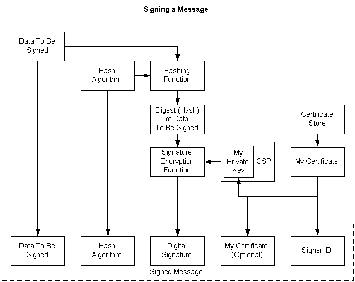

The following illustration depicts the tasks that must be accomplished to create a signed message. The steps are listed following the illustration.

To create a signed message
Create the data (if necessary) and get a pointer to it.
Open a certificate store that contains the signer's certificate.
Get the private key for the certificate. A property must be set on the certificate before using it, to tie a certificate to a particular CSP, and, within that CSP, to a particular private key. This needs to be set once.
Choose a hashing algorithm for the digest operation. We recommend that the hashing algorithm be selected from a configurable location that can be subsequently updated without requiring changes to code.
Send the data through the hashing function by using the hashing algorithm, thus creating a hash (digest) of the data.
Using the private key obtained through the property on the certificate, encrypt the digest, creating the signature.
Include the following in the signed message:
For a detailed procedure and example, see Procedure for Signing Data and Example C Program: Signing a Message and Verifying a Message Signature.
Â
Â